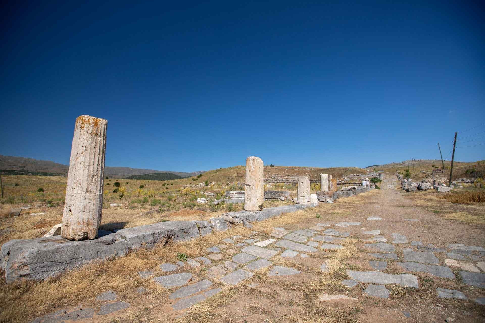

|  |
Şehrin akropolisi (iç kale, yüksek şehir), surlarla çevrili olan alanda 46 hektarlık bir arazi üzerinde kuruludur. Batı kapısı üç girişli, kemerli bir zafer takıdır. Augustus Kutsal Alanı’na geçişi sağlayan Propylon’a (anıtsal giriş) benzer mimari ve plastik anlayışıyla inşa edilen kapı, Michigan Üniversitesi’nin 1920’lerde yaptığı kazılarda ilk kez ortaya çıkmıştır.Şehrin planına yönelik son yıllarda yapılan elektromanyetik araştırmalar, toprak altında birçok yapının yerini belirlemiş ve Priene, Miletos gibi Helenistik şehirlerde başarıyla uygulanmış olan, düzenli, ızgara biçimli, Milet’li mimar Hippodamos’un icadı şehir planının Antiocheia’da da başarıyla uygulandığı yönünde izler vermiştir. Bilinen iki cadde, Batı Kapısı’ndan başlayan 90+320 metrelik Decumanus Maximanus ve Nympheum’dan (anıtsal çeşme) başlayan 400 metrelik Cardo Maximanus’tur. İki cadde Tiberia Platea (Tiberius Alanı)’nın yaklaşık 70 m güneyinde dik açıyla kesişmektedir.
Augustus Tapınağı: Antiokheia’nın en anıtsal yapı kompleksine, Propylon’un merdivenleri çıkıldıktan sonra ulaşılır. Şehrin en yüksek noktasında kayaların azimle oyulmasıyla elde edilen düzlükte kurulu olan tapınak, cephe mimarisiyle ziyaretçiyi ilk anda hayrete düşürecek bir zenginliğe sahip olarak inşa edilmiştir.Kutsal alan içindeki tapınağın yapımına olasılıkla imparatorun sağlığında başlanmış, ölümünden sonra da adına adanmıştır. Görünen yapı, girişini sağlayan Propylon’la çağdaştır ancak kayalığın daha erken dönemlerde başka bir kült için yapılmış olabileceğine dair boğa başları gibi izler de bulunmaktadır. Kökleri çok daha eskiye giden ve bölgede hâkimiyeti bilinen Ana Tanrıça Kybele ve Ay Tanrısı Men inanışları için oyularak düzleştirilmiş kayalık, Roma’nın hâkimiyetiyle İmparator tapınağına dönüştürülmüş olmalıdır.
St. Paul Bazilikası: Antiokheia’nın en önemli yapılarından biri olan, Şehrin kuzeybatısındaki bazilikada ilk kazılar 1920’lerin başında Robinson ve ekibi tarafından başlatılmıştır. Bina son olarak Yalvaç Müzesi tarafından araştırılmıştır. 70x27 m boyutlarındaki yapı, batıdaki 27x13 metrelik narteks (giriş) bölümü şehir surlarına yaslanmış olarak doğu-batı yönünde uzanmaktadır.
|